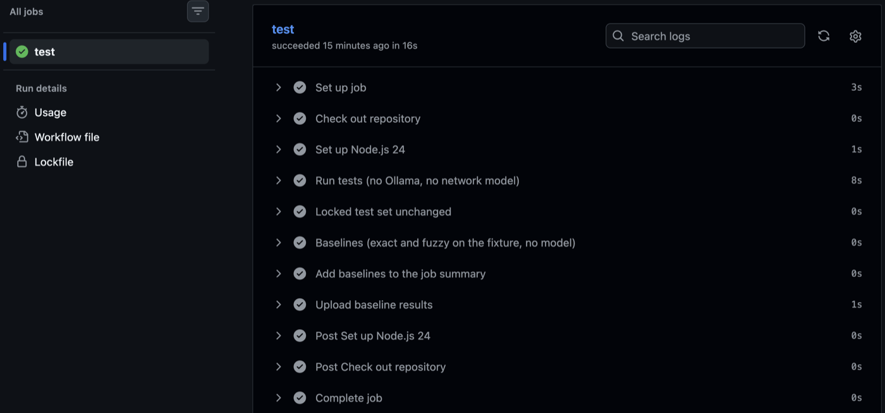
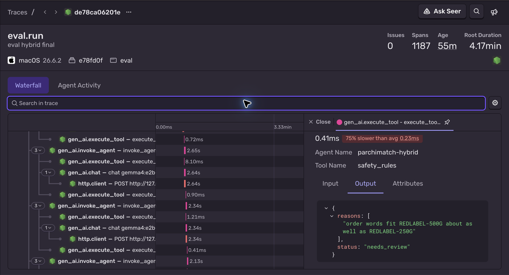

Results · synthetic data + a small human check
Measured on practice orders.
Still waiting for a real shop.
The app handled 88.2% of answerable locked-test lines with no review and 0 wrong rows auto-accepted. These are synthetic results; no real shop has used it yet. A small human-written check also had 0 wrong rows auto-accepted.
Current code · locked synthetic test
Four methods. The same safety checks.
A 111-item synthetic catalogue in 61 product families; 320 practice lines; 80 locked test lines, of which 29 need a human.
| Method | Handled with no review | Wrong rows auto-accepted | No typing needed* | Model calls |
|---|---|---|---|---|
| Exact match | 54.9% | 0 | 54.9% | 0 |
| Fuzzy match | 84.3% | 0 | 84.3% | 0 |
| Model on every line | 84.3% | 0 | 92.2% | 80 |
| Hybrid (the app) | 88.2% | 0 | 92.2% | 31 |
*Automatic, or one tap to confirm a correct pre-filled suggestion. Percentages use answerable lines. The model sees the top 8 candidates. Synthetic data card.
During development, the model on every line was worse than fuzzy matching. On this test it ties fuzzy on automatic rows but gives more correct suggestions. Hybrid asks it only about lines fuzzy can’t resolve.
MacBook Air M2, 8 GB, gemma4:e2b-it-qat, temperature 0, thinking off. Hard lines take about 2 s: p50 1.5 s, p95 2.6 s with nothing else running (up to 2.3 s / 4.5 s while other jobs ran).
Model bake-off · practice set
Five local models, one 8 GB laptop
Each model was the hybrid decider on the 320 practice lines. The chosen one was then run once on the locked test. More disk didn't help the biggest model: RAM is the limit.
| Model | Memory | Handled with no review | Wrong rows | No typing needed | Model p50 / p95 |
|---|---|---|---|---|---|
gemma4:e2b-it-qat (default) | 3.6 GB | 88.7% | 0 | 96.1% | 3.1 s / 9.2 s |
qwen3.5:2b-q4_K_M (fast option) | 1.6 GB | 88.7% | 0 | 94.6% | 2.5 s / 3.3 s |
gemma3:4b | 2.8 GB | 88.7% | 0 | 95.6% | 5.3 s / 8.4 s |
qwen3.5:4b-q4_K_M (previous default) | 3.1 GB | 88.2% | 0 | 95.6% | 5.2 s / 8.4 s |
gemma4:e4b-it-qat (40-line speed check) | 6.0 GB (2.5 on GPU) | — | 0 | — | 5.6 s / 37 s |
The top three are within 1–3 lines of each other. Gemma 4 E2B was chosen for its operator-facing numbers; Qwen3.5 2B is the faster alternative. Full bake-off.
Human-written check · 15 October 2026
Typed by people other than the author
Three friends (not shopkeepers) typed orders for 6 catalogue items in their own words. The app’s splitter turned them into 11 order pieces. The owner labelled them, then they were locked and scored once, with no change to the app before or after. A first round was excluded because those replies were AI-written.
| Method | Wrong rows auto-accepted | Missed flags | Handled with no review | No typing needed | Model calls |
|---|---|---|---|---|---|
| Exact match | 0 | 1 | 40% (2/5) | 40% | 0 |
| Fuzzy match | 0 | 1 | 60% (3/5) | 60% | 0 |
| Model on every line | 0 | 1 | 60% (3/5) | 80% | 11 |
| Hybrid (the app) | 0 | 1 | 60% (3/5) | 80% | 5 |
- No method auto-accepted a wrong row.
- The one missed flag is the same line for every method:
fortune oil 1 ltr ke 1 carton. The app entered exactly what the label says (Fortune oil 1 L, 1 carton), but the label marked it as needing a question, so by the strict definition it counts as dangerous: 1 of 11. The label was not changed after scoring. - Gaps synthetic data never showed: items joined by “aur”, or sent with no separator, are not split (the app asks, but its suggestion names only one product); “pouch” is not a unit word yet; and “tata namak kilo” fits Tata Tea about as well as Tata Salt, so the app asks.
- 11 pieces from 3 people on 6 items: indicative only. Fixes must be built on practice data and checked on a new human round, never on this set.
Read the denominators
What each metric means
| Metric | Definition |
|---|---|
| Handled with no review | Correct automatic rows ÷ answerable lines. Product, quantity and unit must all be right (“auto-accept accuracy”). |
| Dangerous rows | Wrong automatic rows + missed review flags. Rate: divide by all lines. Target: zero. |
| No typing needed | Correct automatic rows + fully correct flagged suggestions, divided by answerable lines (“zero typing”). |
| Suggestion accuracy | Fully correct suggestions ÷ flagged answerable rows. |
| Flag recall | Correctly flagged rows ÷ all lines needing review. |
| Review load | Rows sent to the operator ÷ all lines. |
| Recall@k | Correct product inside the k model candidates. |
| Model calls and latency | Call count and p50 / p95 model response times. |
A boundary around the test
Lock first. Tune on practice data.
- Label what a careful operator would conclude.
- Hash-lock the test before any model runs. Changed locked sets cannot be scored.
- Tune prompts, thresholds, aliases and parser words only on development data.
- Compare methods on the same locked test. Justify fixes using development examples.
The synthetic test uses a separate seed; near-duplicate practice lines are rejected and leak-checked. Both reflect one author’s assumptions.
On every push, CI recomputes the locked test set’s hash and fails the build if it changed, then runs the automated tests and the no-model baselines.

An evaluation can optionally be traced in Sentry: each line’s fuzzy match, model call, token counts and safety rules. Tracing exists only in the evaluation tool and runs only on synthetic or fixture data. The shop app sends nothing anywhere.

Synthetic data protocol and limitations · Continuous integration · Tracing an evaluation.
Try to make it fail
Random model picks still met the checks
The project has 210 automated tests, run by GitHub Actions on every push. In an adversarial test, a fake model made random product picks over 320 synthetic practice lines. Across 1,265 model calls, 0 wrong rows were auto-accepted.
This does not establish real-order accuracy or cover every failure.
Gains and misses · synthetic test examples
Helpful on a few lines. Fallible on others.
Where it helped
Two more automatic lines than fuzzy: thmusup 2ltr pc 6 and Sarf 500gm 2 Ctn. Two correct one-tap suggestions: everest halddi, frooti 10 ka.
Where it missed
It suggested 100 g for amul butter aadha kilo (500 g was right), read पारले जी 20 वाली as Frooti, and gave an unrelated suggestion for 5 sttar 20 wala 5box after parsing found no product words. All three needed review.
Examples from the current synthetic evaluation. Data card. Product names are examples in a synthetic catalogue; no affiliation.
History · synthetic test
The earlier run
The test pass fixed 25 findings. Stricter parsing now asks about 5 sttar…. That locked-test miss was not tuned away.
| Method | Handled with no review | Dangerous rows | No typing needed | Model calls | Model p50 / p95 |
|---|---|---|---|---|---|
| Exact match | 52.9% | 0 | 52.9% | 0 | — |
| Fuzzy match | 86.3% | 0 | 86.3% | 0 | — |
| Model on every line | 86.3% | 0 | 92.2% | 80 | 8.4 s / 15.3 s |
| Hybrid (the app) | 88.2% | 0 | 94.1% | 30 | 4.2 s / 4.8 s |
History, not current performance. Synthetic data card.
Development history
Why the design became hybrid
These 40 hand-written practice lines were used for tuning. This is design history, not held-out or real shop performance.
| Version | Method | Handled with no review | Dangerous rows | Review load | Model calls |
|---|---|---|---|---|---|
| Baseline | Fuzzy | 78.1% | 0 | 37.5% | 0 |
| Model picks product, full catalogue | llm-full | 50.0% | 3 | 52.5% | 40 |
| Model picks product, top 8 | llm-cand | 43.8% | 2 | 60% | 40 |
| + code checks, suggestions | llm-cand | 78.1% | 1 | — | 40 |
| + fuzzy first, near-tie margin | Hybrid | 87.5% | 0 | 30% | 11 |
The synthetic data card describes the separate generated benchmark.
What remains unknown
Real orders are the next test
- No real shop has used it yet; real review rates are unknown. Apart from the 11-piece human check, every result here is on synthetic data.
- Prices, carton sizes and nicknames are illustrative.
- One shop, operator and order at a time. Pasted text only; no photos, voice or WhatsApp integration.
- A comma inside an item’s description, such as
maggi, 4 pack 1 ctn, splits it into two rows. Commas inside numbers (1,500) are read correctly. - Items joined by “aur”, or sent with no separator, are not split yet (found by the human check).
- No local-server authentication; a single-user desktop tool.